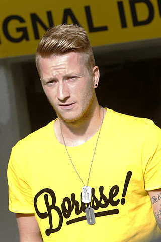

On 4 January 2012, Reus signed with his former club Borussia Dortmund for a €17.1 million transfer fee on a five-year deal that will keep him at the club until July 2017. He spoke about his transfer saying, "I've made the decision to take the next step forward in the coming season. I'd like to play for a club who can challenge for the league title and guarantee me Champions League football.